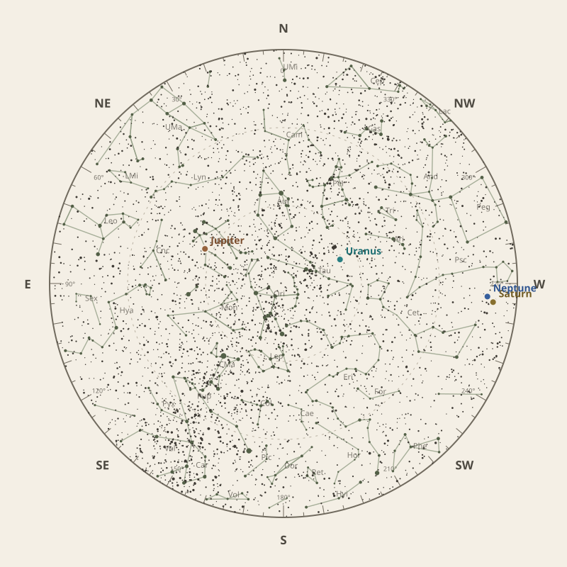

← Annual almanac


North is at the top; east is at the left. Solar System objects shown are above the horizon at 10 pm.
Monthly field almanac
January 2026
Jupiter reaches opposition on 11 Jan 2026 and is highest around 12:30 am.
- New Moon
- 19 Jan Darkest skies
- Full Moon
- 4 Jan Brightest skies
- Best dark window
- 15 Jan 11h 42m
Current conditions
Checking the sky near Malabar Coast, India…
Sky chart: 15 Jan 2026, 10 pm
Malabar Coast, India local time.
Show static monthly chart

Night planner
Choose a date to see astronomical darkness, Moon interference, Galactic Centre visibility, and planet altitudes and times.
Best low-Moon dark periods this month
- 6:45 pm–6:27 am11h 42m · 20% Moon
- 6:45 pm–6:27 am11h 41m · 13% Moon
- 6:46 pm–6:27 am11h 41m · 8% Moon
January highlights
- Milky Way
Milky Way core window
44m with 28° altitude.
- Minor planets
7 Iris
74° altitude; magnitude 9.9.
- Planets
Neptune
Best monthly date at 73° altitude.
- Comets
Comet 29P
75° altitude; magnitude 17.6.
- Planetary events
Jupiter opposition
Visible for most of the night.


Moon phases
91%
80%
20%
12%
80%
Low illumination favours faint targets. Bright lunar targets are best near full Moon.
Download Moon phase CSV →

Galactic Centre sessions
- 5:44 am–6:28 am44m · core to 28°
- 5:49 am–6:28 am40m · core to 27°
- 5:53 am–6:28 am36m · core to 26°


Planet visibility
Evening
- Uranus30 Jan · 7:30 pm82° · Excellent
- Neptune1 Jan · 6:30 pm73° · Excellent
- Saturn1 Jan · 6:30 pm69° · Excellent
 Uranus
Uranus Neptune
Neptune Saturn
SaturnOvernight
- Jupiter5 Jan · 1:00 am79° · Excellent
 Jupiter
JupiterPredawn
- Mercury1 Jan · 6:30 am7° · Poor
 Mercury
MercuryEvents
- 7 Iris74° altitude; magnitude 9.9.
- Comet 29P75° altitude; magnitude 17.6.
- Jupiter oppositionVisible for most of the night.


Data and downloads
Positions are unavailable for 2 comet entries.
Occultation times use a smooth lunar limb; confirm grazing events with IOTA Occult 4.